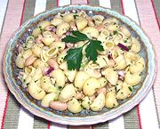

|
Pasta Salad with TunaItaly - Insalata di Pasta con Tonno | ||||
| Makes: Effort: Sched: DoAhead: |
5 # ** 2 hrs Best |
An excellent flavorful cold pasta salad suitable for buffet or table service. It can also serve as a light main dish for hot summer days. | |||
|
1 1/3 6 2-1/2 2 14 2 7 1/4 1/4 1-1/2 1/2 |
# c oz oz oz oz c c t t |
Pasta (1) Olive Oil ExtV Red Onion Celery can Beans (2) can Tuna (3) Lemon Juice Parsley Salt Pepper |
Make - (2 hrs - 20 min work)
|